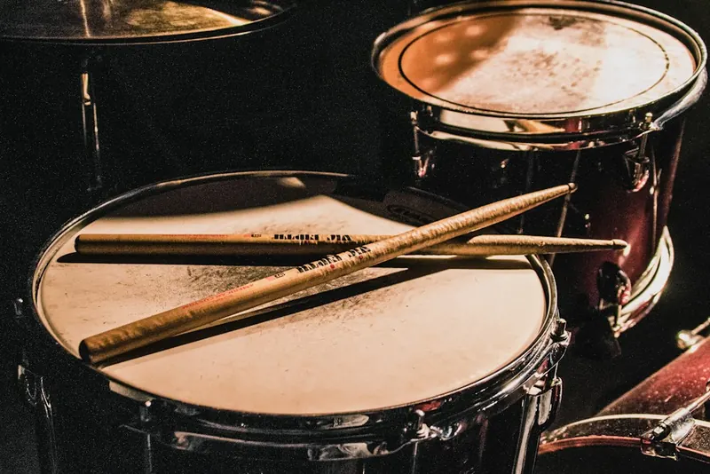
Nummer 01
Meteen aan de slag
Vanaf je eerste les speel je op een speelklaar, professioneel instrument. Je hoeft niets mee te nemen.
Drum- en slagwerkschool in Berlicum en Sint-Michielsgestel
Drumschool van het Jaar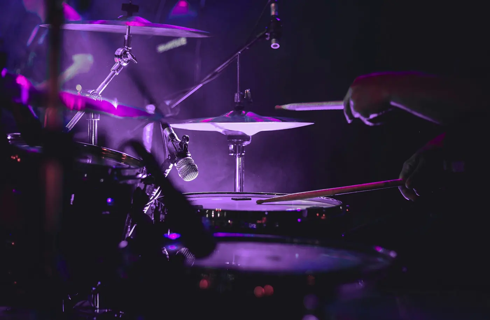

Vanaf je eerste les speel je op een speelklaar, professioneel instrument. Je hoeft niets mee te nemen.
Uitgeroepen tot Drumschool van het Jaar door de Slagwerkkrant. Oprichter Tonn won meermaals Beste Drumleraar Benelux.
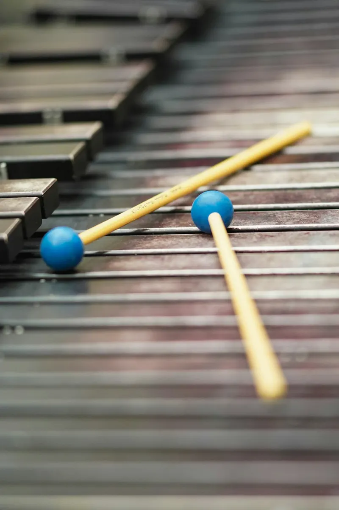
Spelen voor je plezier, of gericht naar de landelijke examens A t/m D en een toelating. Je route groeit mee.
Alles wat je kunt slaan, leer je hier bespelen. Twijfel je? In een proefles ontdek je het.
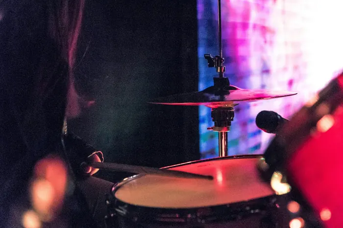
Individuele les in de stijl die jou raakt: techniek, noten lezen en improvisatie, op jouw tempo.
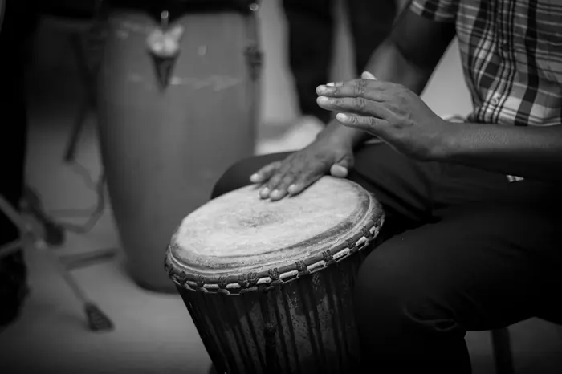
Djembé, conga, bongo's en repinique, met de techniek én het verhaal achter elk ritme.
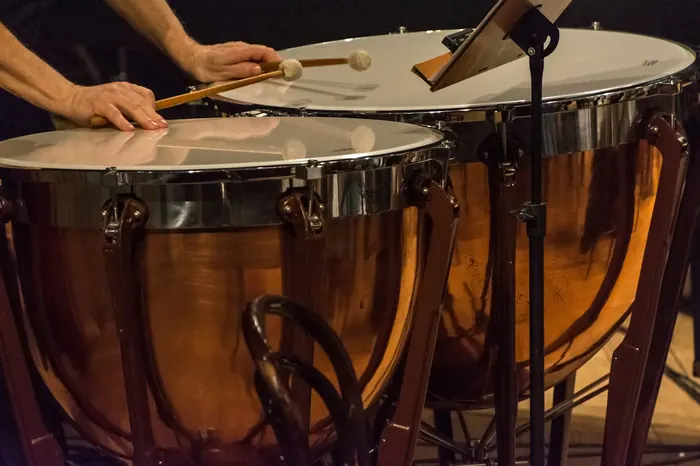
Kleine trom, pauken en melodisch slagwerk zoals marimba en vibrafoon. De route voor orkest, HaFa en conservatorium.
Geen standaardlesje: je krijgt een route die meegroeit met wat jij wilt.
Spelenderwijs ritme leren op een echt instrument. Vanaf de eerste les zit je achter een speelklaar drumstel.
Altijd al willen drummen? Les op jouw niveau en in jouw stijl, van je eerste groove tot dat ene nummer.
Serieuze plannen? Met je docent werk je gericht naar een vervolgopleiding of het conservatorium.
Rhythm Impact is een initiatief van drie slagwerkdocenten: Tonn van de Veerdonk, Coen Blokx en Patrick van den Heuvel. Vanaf 2000 bundelden ze hun kwaliteiten, met één doel: alle disciplines van het slagwerk onder één dak.
Door het 'meteen aan de slag'-beleid groeide de school snel. Met zo'n 600 leerlingen is Rhythm Impact een van de grootste slagwerkscholen van Nederland.
Een greep uit voorspeelmiddagen, optredens en onze lesstudio's.
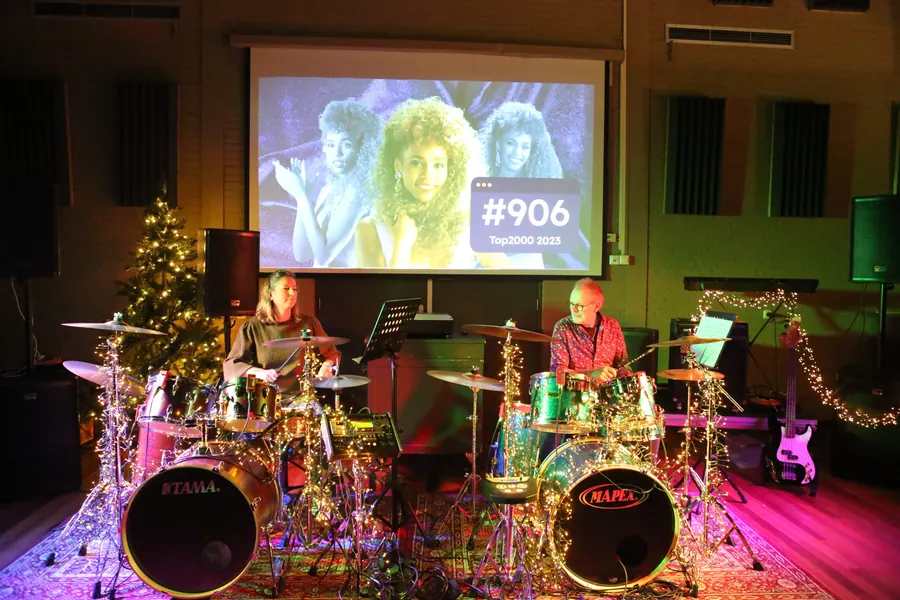
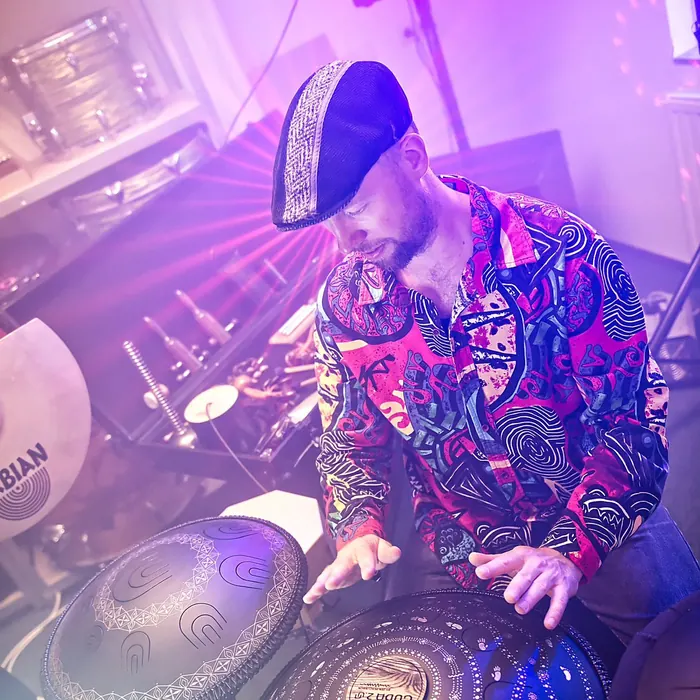
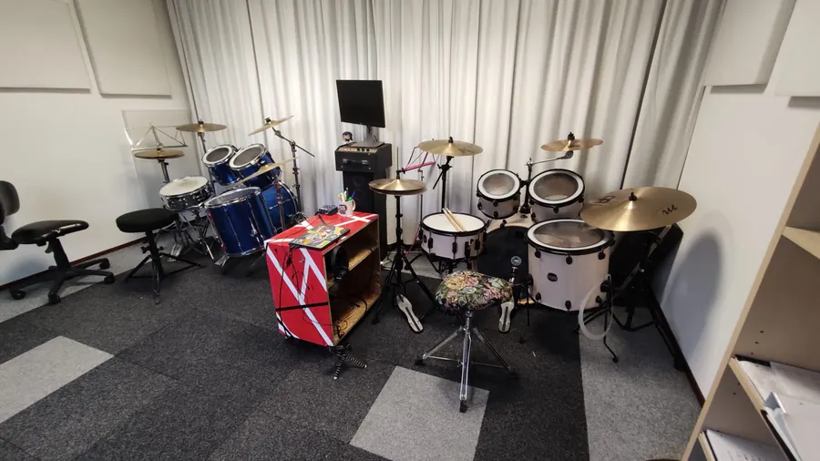
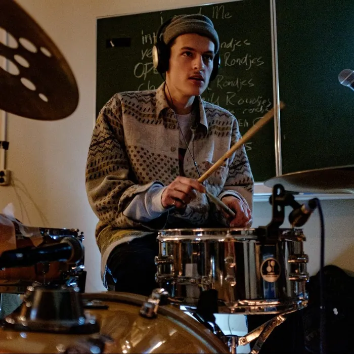

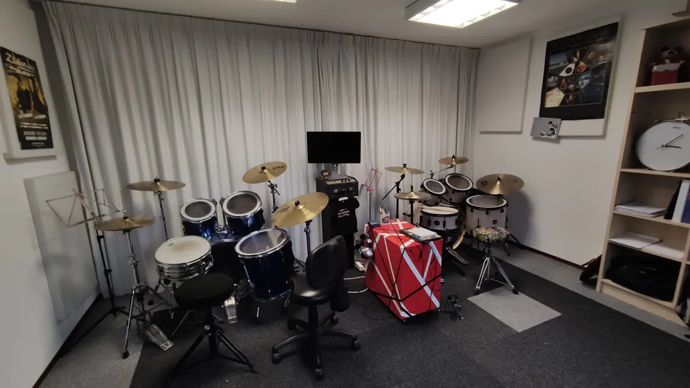
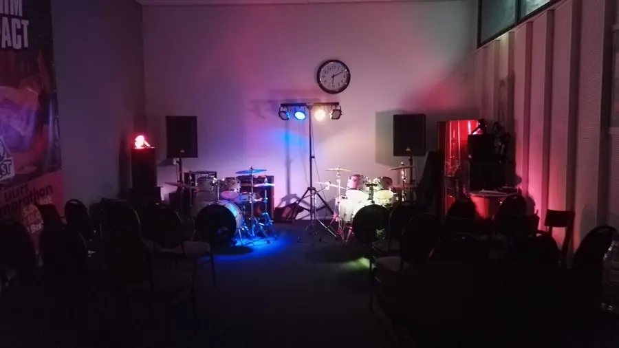
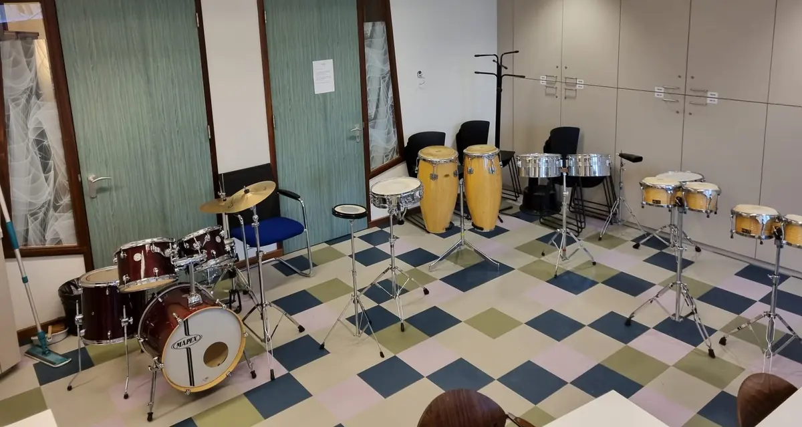
Een ontzettend fijne drumschool met fijne en betrokken mensen. Ik volg hier zelf al ruim 10 jaar drumles en doe dat nog altijd met ontzettend veel plezier. De prettige sfeer en goede begeleiding maken het een geweldige plek om te leren drummen en jezelf te blijven ontwikkelen. 100% een aanrader.
Een uitstekende drumschool met fijne en deskundige docenten. De lessen worden gegeven op echte, akoestische drumstellen in plaats van elektronische drums, wat ik erg prettig vind. Daarnaast hebben ze ook nog een eigen winkel. Een mooie combinatie voor iedereen die graag drumt!
Een topdrumschool met een eigen winkel! Of je nu wilt beginnen met drummen of al ervaring hebt met slagwerk, dit is absoluut een plek om eens te bezoeken. Een fijne zaak voor iedereen met interesse in drums en percussie!
Een ontzettend goede drumschool met vriendelijke en gezellige mensen. Er hangt een fijne sfeer en het is een leuke plek om met drummen bezig te zijn. Echt supertof!
Een nette en goed verzorgde drumschool met vriendelijke medewerkers. De ruimtes zijn prettig ingericht en er zijn flexibele lestijden mogelijk, wat erg handig is. Daarnaast is er voldoende parkeergelegenheid. Alles bij elkaar een fijne en toegankelijke locatie voor drumlessen!
Goede drumlessen bij een fijne drumschool. De lessen zijn prettig en leerzaam. Een speciale shout-out naar Patrick voor zijn inzet en begeleiding!
Een geweldige drumschool! Een fijne plek om te leren drummen en jezelf verder te ontwikkelen. Zeker de moeite waard voor iedereen die enthousiast is over drums en slagwerk!
Excellent drum lessons! A great place to learn and improve your drumming skills. A very positive experience, and definitely recommended!
Een prima drumschool waar je goed terechtkunt voor drumlessen. Een fijne plek voor iedereen die graag wil leren drummen of zijn vaardigheden verder wil ontwikkelen. Zeker een aanrader!
Volledig ingericht met drumstellen, percussie en klassiek slagwerk. Jij hoeft alleen te komen.
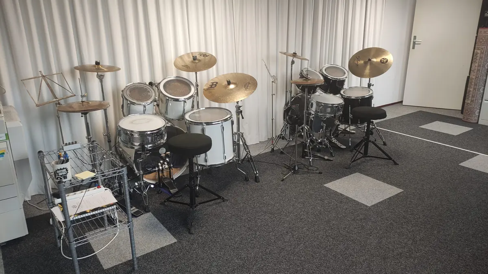
Kom langs, ga achter een speelklaar drumstel zitten en voel in één les of het klikt.